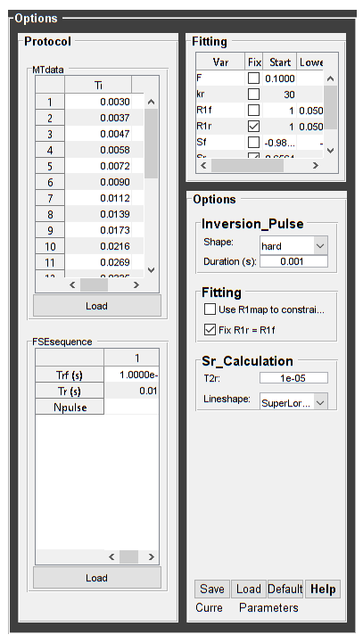
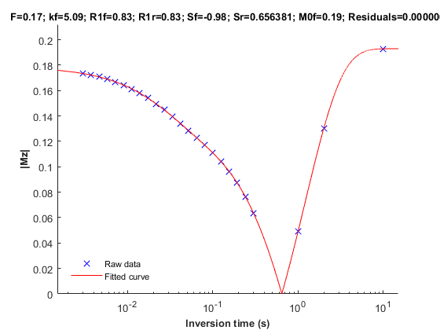

Contents
% Batch to process SIRFSE data without qMRLab GUI (graphical user interface) % Run this script line by line % Written by: Ian Gagnon, 2017
DESCRIPTION
help SIRFSE
-----------------------------------------------------------------------------------------------------
SIRFSE : qMT using Inversion Recovery Fast Spin Echo acquisition
-----------------------------------------------------------------------------------------------------
-------------%
ASSUMPTIONS %
-------------%
(1) FILL
(2)
(3)
(4)
-----------------------------------------------------------------------------------------------------
--------%
INPUTS %
--------%
1) MTdata : Magnetization Transfert data
2) R1map : 1/T1map (OPTIONAL but RECOMMANDED Boudreau 2017 MRM)
3) Mask : Binary mask to accelerate the fitting (OPTIONAL)
-----------------------------------------------------------------------------------------------------
---------%
OUTPUTS %
---------%
Fitting Parameters
* F : Ratio of number of restricted pool to free pool, defined
as F = M0r/M0f = kf/kr.
* kr : Exchange rate from the free to the restricted pool
(note that kf and kr are related to one another via the
definition of F. Changing the value of kf will change kr
accordingly, and vice versa).
* R1f : Longitudinal relaxation rate of the free pool
(R1f = 1/T1f).
* R1r : Longitudinal relaxation rate of the restricted pool
(R1r = 1/T1r).
* Sf : Instantaneous fraction of magnetization after vs. before
the pulse in the free pool. Starting point is computed using Block
simulation.
* Sr : Instantaneous fraction of magnetization after vs. before
the pulse in the restricted pool. Starting point is computed using block
simulation.
* M0f : Equilibrium value of the free pool longitudinal
magnetization.
Additional Outputs
* M0r : Equilibrium value of the restricted pool longitudinal
magnetization. Computed using M0f = M0r * F.
* kf : Exchange rate from the restricted to the free pool.
Computed using kf = kr * F.
* resnorm: Fitting residual.
-----------------------------------------------------------------------------------------------------
----------%
PROTOCOL %
----------%
1) MTdata
* Ti : Inversion times (s)
* Td : Delay times (s)
2) FSEsequence
* Trf : Duration of the pulses in the FSE sequence (s)
* Tr : Delay between the pulses in the FSE sequnece (s)
* Npulse : Number of refocusing pulses in the FSE sequence
-----------------------------------------------------------------------------------------------------
---------%
OPTIONS %
---------%
Inversion Pulse
* Shape : Shape of the inversion pulse.
Available shapes are:
- hard
- gaussian
- gausshann (gaussian pulse with Hanning window)
- sinc
- sinchann (sinc pulse with Hanning window)
- singauss (sinc pulse with gaussian window)
- fermi
* Duration : Duration of the inversion pulse (s)
Fitting
* Use R1map to : By checking this box, you tell the fitting
constrain R1f algorithm to check for an observed R1map and use
its value to constrain R1f. Checking this box
will automatically set the R1f fix box to true in
the Fit parameters table.
* Fix R1r = R1f : By checking this box, you tell the fitting
algorithm to fix R1r equal to R1f. Checking this
box will automatically set the R1r fix box to
true in the Fit parameters table.
Sr Calculation
* Lineshape: The absorption lineshape of the restricted pool. Available lineshapes are: Gaussian, Lorentzian and SuperLorentzian.
* T2r: Transverse relaxation time of the restricted pool (T2r = 1/R2r)
-----------------------------------------------------------------------------------------------------
Written by: Ian Gagnon, 2017
Reference: FILL
-----------------------------------------------------------------------------------------------------
Reference page in Doc Center
doc SIRFSE
Load dataset
[pathstr,fname,ext]=fileparts(which('SIRFSE_batch.m')); cd (pathstr); % Load your parameters to create your Model % load('MODELPamameters.mat'); Model = SIRFSE
Model =
SIRFSE with properties:
MRIinputs: {'MTdata' 'R1map' 'Mask'}
xnames: {1×7 cell}
voxelwise: 1
st: [0.1000 30 1 1 -0.9842 0.6564 1]
lb: [0 0 0.0500 0.0500 -1 0 0]
ub: [1 100 10 10 0 1 2]
fx: [0 0 0 1 0 1 0]
Prot: [1×1 struct]
buttons: {1×21 cell}
options: [1×1 struct]
Sim_Single_Voxel_Curve_buttons: {1×6 cell}
Sim_Sensitivity_Analysis_buttons: {'# of run' [5]}
Check data and fitting (Optinal)
%************************************************************************** % I- GENERATE FILE STRUCT %************************************************************************** % Create a struct "file" that contains the NAME of all data's FILES % file.DATA = 'DATA_FILE';file.MTdata = 'MTdata.nii'; file.MTdata = 'MTdata.nii.gz'; file.Mask = 'Mask.nii.gz'; %************************************************************************** % II- CHECK DATA AND FITTING %************************************************************************** qMRLab(Model,file);

Create Quantitative Maps
%************************************************************************** % I- LOAD PROTOCOL %************************************************************************** % MTdata Ti = [ 0.0030 ; 0.0037 ; 0.0047 ; 0.0058 ; 0.0072 0.0090 ; 0.0112 ; 0.0139 ; 0.0173 ; 0.0216 0.0269 ; 0.0335 ; 0.0417 ; 0.0519 ; 0.0646 0.0805 ; 0.1002 ; 0.1248 ; 0.1554 ; 0.1935 0.2409 ; 0.3000 ; 1.0000 ; 2.0000 ; 10.0000 ]; Td = 3.5 * ones(length(Ti),1); Model.Prot.MTdata.Mat = [Ti,Td]; % FSE sequence (time in sec) Trf = 0.001; Tr = 0.01; Npulse = 16; Model.Prot.FSEsequence.Mat = [ Trf ; Tr ; Npulse ]; % *** To change other option, go directly in qMRLab *** % Update the model Model = Model.UpdateFields; %************************************************************************** % II- LOAD EXPERIMENTAL DATA %************************************************************************** % Create a struct "data" that contains all the data % .MAT file : load('DATA_FILE'); % data.DATA = double(DATA); % .NII file : data.DATA = double(load_nii_data('DATA_FILE')); data = struct; data.MTdata = double(load_nii_data('MTdata.nii.gz')); data.Mask = double(load_nii_data('Mask.nii.gz')); %************************************************************************** % III- FIT DATASET %************************************************************************** FitResults = FitData(data,Model,1); % 3rd argument plots a waitbar FitResults.Model = Model; delete('FitTempResults.mat'); %************************************************************************** % IV- CHECK FITTING RESULT IN A VOXEL %************************************************************************** figure voxel = [50, 60, 1]; FitResultsVox = extractvoxel(FitResults,voxel,FitResults.fields); dataVox = extractvoxel(data,voxel); Model.plotmodel(FitResultsVox,dataVox) %************************************************************************** % V- SAVE %************************************************************************** % .MAT file : FitResultsSave_mat(FitResults,folder); % .NII file : FitResultsSave_nii(FitResults,fname_copyheader,folder); FitResultsSave_nii(FitResults,'MTdata.nii.gz'); save('SIRFSEParameters.mat','Model');
Check the results
Load them in qMRLab